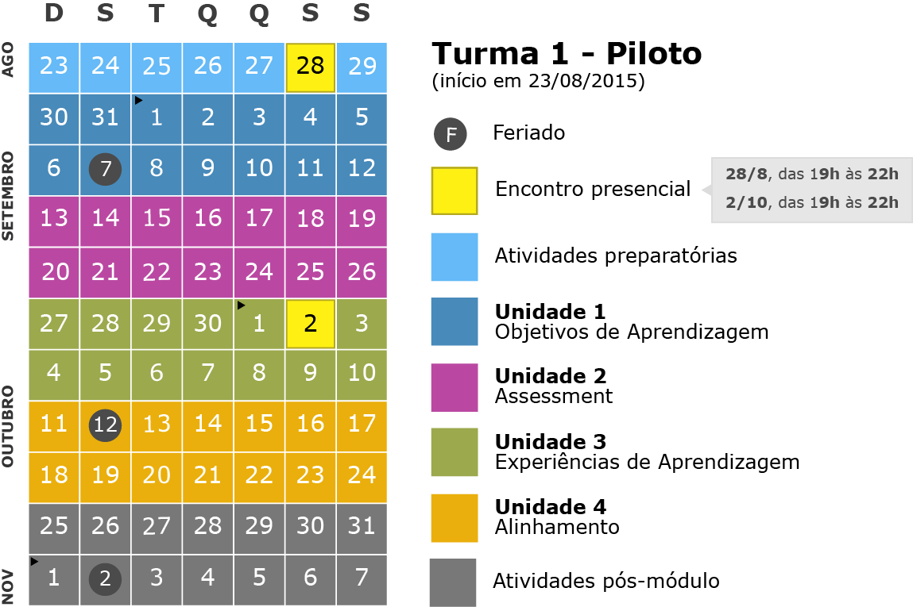

Módulo Planejamento de Curso – Turma 1 (piloto)
Buscando dar continuidade ao processo de desenvolvimento do corpo docente, o DEA (Desenvolvimento de Ensino e Aprendizagem), em parceria com as coordenações, está oferecendo um curso de formação e aperfeiçoamento em formato híbrido (parte presencial, parte a distância).
O módulo “Planejamento de Curso” tem duração de onze semanas e conta com dois encontros presenciais, cuja participação é obrigatória:

Ao término do módulo, os docentes estarão aptos a:
- Definir os objetivos de aprendizado da sua disciplina/curso, justificando sua relevância em relação ao contexto em que está inserida (objetivos do programa e público-alvo).
- Selecionar instrumentos de avaliação para mensurar o aprendizado dos alunos em sua disciplina/curso, com previsão de feedbacks formativos ao longo do processo.
- Selecionar dinâmicas propícias para alcançar os objetivos de aprendizagem propostos, com predominância de dinâmicas participativas e potencialmente motivadoras.
- Estruturar a disciplina/curso em unidades, de modo que objetivos, assessment e experiências de aprendizagem estejam alinhados.
- Comunicar o planejamento da sua disciplina/curso (objetivos, dinâmicas e avaliações) no formato do programa em que se insere, incluindo o que se espera dos alunos durante o processo.
O curso será fortemente pautado no trabalho colaborativo e na troca de experiência entre os docentes. Tudo isso, juntamente com as atividades de autoestudo, exigirá dedicação semanal de aproximadamente 4h.
Se você já fez o módulo “Aprendizado Centrado no Aluno” e deseja participar da turma-piloto, por favor, preencha o formulário e manifeste seu interesse.
 Calendário de eventos
Calendário de eventos